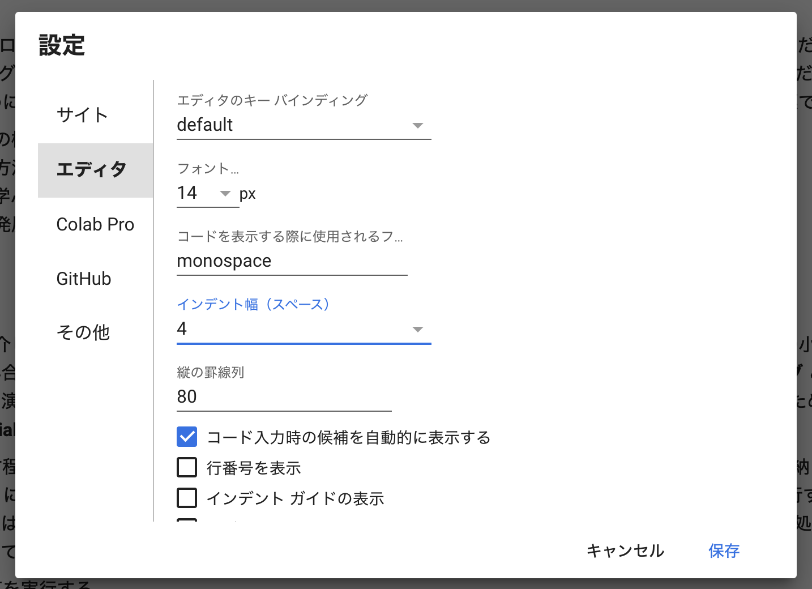

条件分岐（講義）#
担当：古居彬
内容#
条件分岐では，与えられた条件式に応じて処理を切り替える仕組みについて学ぶ． 条件分岐を用いることで，例えばユーザの入力した内容に応じて処理を変えたり，プログラム内で計算した値に応じて細かい処理を切り替えることが可能になる． 具体的には，以下の内容を身につけることを目指す．
条件式と，それによって得られる真偽値を理解する
条件式を用いて，数値や文字列の比較を行う方法を理解する
Pythonのインデント構文を理解する
条件分岐を行うための
if文，if...else文，if...elif...else文について学ぶより複雑な条件分岐について学ぶ
条件分岐とは？#
日常生活において，何かしらの「条件」に基づき，もし〇〇ならXXする，そうでなければ△△するというような場面は多くあるだろう．
💡 身の回りの条件分岐の例
もし明日晴れていたら畑を耕す，そうでなければ家で読書する
もしアイスが100円以下なら買う，そうでなければ買わない
このように条件に応じて処理内容を変える処理をコンピュータに指示するために，条件分岐 という仕組みがサポートされている．
通常，プログラムは上から順番に実行されるが，条件分岐を行うと途中で処理を分岐できるようになり，より柔軟なプログラムを作成することができる． このような条件分岐処理を行うためには，まず「もし〇〇なら〜」という条件の部分をプログラミング的に表現する必要がある．
真偽値と条件式#
真偽値（bool） とは，真（True）であるか 偽（False）であるかの二値を取る型のことであり，条件 が満たされているか？満たされてないか？を表す変数の型として用いられる（論理値 とも呼ばれる）．
この真偽値は，条件を分岐する上で非常に重要な概念となる．
皆さんが中学・高校で勉強した値の比較から真偽値について確認しよう． 例えば，\(2\) と \(3\) の値を比較したとき，\(2 < 3\) は明らかに真である． この不等式のような式を，プログラミングでは 条件式 と呼ぶ． この条件式の結果に応じて，真偽値が得られる．
💡 条件式と真偽値の例
\(2 < 3\) のときは式は真なので
Trueが得られる．\(2 > 3\) や \(2 = 3\) の式は偽なので
Falseが得られる．
このように，条件式とその結果（真偽値）によって条件分岐を制御する．
代表的な比較演算子と条件式#
二つの変数に対する条件式を構成する演算子（< や > や =など）のことを 比較演算子 と呼ぶ．
以下に，代表的な比較演算子を用いた条件式とその意味を示す．
条件式 |
意味 |
Trueの例 |
Falseの例 |
|---|---|---|---|
|
|
|
|
|
|
|
|
|
|
|
|
|
|
|
|
|
|
|
|
|
|
|
|
|
|
|
|
|
|
|
|
💡 「等しい」の表し方
「
xとyは等しい」を通常の数式で表現すると \(x = y\) だが，Pythonにおいて等号=は「代入」の意味を持つので，条件式では使えない（詳しくは 前回 を参照）． 代わりに，等号を2つ続けた演算子==を用いてx == yと書くことで，「xとyは等しい」という条件式を表現できる．この点は特に間違いやすいので，注意しよう．
数値の比較#
いくつか条件式の練習をしてみよう．
条件式が満たされているかどうか，またそれに応じて出力が True と False のどちらになるのか注意して実行してみて欲しい．
2 < 3
True
2 < 1
False
2 == 2
True
2 != 2
False
真偽値を変数に代入する#
真偽値は他のデータ型と同様に変数に代入することができる．
is_student = True
is_adult = False
print(f'学生ですか？ {is_student}')
print(f'大人ですか？ {is_adult}')
学生ですか？ True
大人ですか？ False
# 条件式の結果を変数に代入することも可能
age = 20
is_adult = age >= 18
print(f'年齢: {age}歳')
print(f'成人ですか？ {is_adult}')
年齢: 20歳
成人ですか？ True
文字列の比較#
数値だけでなく，文字列同士の比較も可能である．
'Hello' == 'Hello'
True
'Hello' == 'Bonjour'
False
'Hello' > 'Bonjour'
True
なお，文字列の大小関係（順番）は，文字コードで判定される． 詳しい説明は省略するが，英字の場合，基本的にはアルファベットの順番がそのまま大小関係になるという認識で良い．
例えば上記のHelloとBonjourの場合だと，Helloの1文字目「H」とBonjourの1文字目「B」がまず比較され，アルファベット順で「B < H」となるため（Bの方が順番が若い），"Hello" > "Bonjour" は True となる．
なお，1文字目が同じなら2文字目，3文字目，…と順番に評価される．
'a' < 'b'
True
'aa' < 'ab'
True
なお，大文字と小文字は別物として扱われ，大文字の方が小文字よりも順番が若い．
'A' == 'a'
False
'A' < 'a'
True
in 演算子#
in という演算子を使うことで，リストや文字列など複数の要素が格納されたデータ型に対して，「ある要素が含まれているか？」という条件式を定義できる．
より数式的に説明すると，in という演算子を使うことで，右辺に左辺の値が含まれているかどうかを判定することが可能である．
例として，x in y のように書くと，x が y に含まれていると True，含まれていないと False を返す条件式となる．
基本的な使い方#
例えばリストの中に特定の値が含まれているかどうかを判定したい場合は，以下のように書けば良い．
1 in [0, 1, 2] # リスト[0, 1, 2]の中に 1 が存在するかどうかの判定
True
100 in [0, 1, 2]
False
'Hiroshima' in ['Yamaguchi', 'Hiroshima', 'Shimane', 'Tottori', 'Okayama']
True
リストのほか，タプルや集合，range などのイテラブルオブジェクトに対する演算が可能である（rangeについては「繰り返し処理」で説明する）．
1 in (0, 1, 2) # タプル
True
1 in {0, 1, 2} # 集合
True
1 in range(3)
True
文字列に対する in#
文字列に対しては，ある部分文字列が含まれているか？といった判定が可能である．
'a' in 'abc' # 文字列 'abc' の中に文字 'a' が含まれるかどうかの判定
True
'x' in 'abc'
False
'ab' in 'abc' # 文字列 'abc' の中に文字列 'ab' が含まれるかどうかの判定
True
not in による否定#
in 演算子の否定には，not in を用いる．
つまり，x not in y と書くと，y に x が含まれていない場合に True となる．
100 not in [1, 2, 3]
True
📝 真偽値と条件式のまとめ
「条件を満たす」あるいは「条件を満たさない」の判断に用いる式を条件式と呼ぶ．
条件式の結果は真偽値で表現され，条件を満たす場合には
True，満たさない場合にはFalseとなる．条件式は，
<，>，<=，>=，==，!=などの比較演算子を用いて記述する．
数値だけでなく，文字列の比較も行える
インデント構文#
条件式を用いた分岐処理（条件分岐）について説明する前に，Pythonのインデント（行頭の空白，字下げ）について説明する．
これまで書いてきたプログラムは，ほとんどが1行で書けるような短い「文」だったが，実際には複数行にわたる「文」で構成される． 基本的には，記述した順番に上から一文ずつ実行されていくが，いくつかの文の「グループ」を作成することで，条件分岐のような特殊な処理ができるようになる． このようなグループのことを ブロック または コードブロック と呼ぶ．
例えば，以下は if 文（後ほど詳しく述べます）を用いて条件分岐を行なっているプログラムである．
具体的には，条件式 condition == 'ok' が成り立つ（つまり True となる）ときに condition: ○ を表示するような処理になっている．
if condition == 'ok':
print('condition: ○')
上記のプログラムをみたとき，print の前に空白（スペース）が含まれていることに気がついただろうか？
このような空白は インデント と呼び，Pythonではこのインデントによってコードブロックを表現するという決まりがある．
💡 【発展】他のプログラミング言語におけるコードブロックの作り方
コードブロックの表現方法は，プログラミング言語によって異なる． 詳しくは省略するが，大きく分けると以下のような方法がある．
括弧で囲む方法：C/C++，Java，Rなど
キーワードで囲む方法：Visual Basic，Rubyなど
インデントで区別する方法：Pythonなど
複数の言語を学んでいるとこのあたりを混同してしまうことがあるので，気をつけよう．
Pythonでは，このインデントの深さによって，プログラム文は異なるブロックとして扱われる．
具体的には，「キーワード + コロン (:)」でブロックが始まり，続くブロックはインデントで表現される．
インデントの深さが戻るまで，プログラム文は同じブロックに属することになる．
まとめると次のようなイメージである．
1行目の if condition == 'ok': は， if 文の条件式 condition == 'ok' が True の場合，コードブロックの処理を実行することを意味している．
末尾にコロン (:) があるので，その次の行からインデントが開始され，コードブロックが作られている．
3行目でインデントが戻っているので，ここで if 文が作るブロックは終わりである．
また，以下の図のように異なる深さのインデントが存在する場合，それぞれに対応するブロックが作られる．
インデントの深さが戻るまで，プログラム文は同じブロックに属することに注意されたい．
💡 補足
やや抽象的な説明だったので具体的なイメージが持ちにくいかもしれないが，ひとまずこれ以降のプログラム中にインデント（行頭の空白）が登場したら，何かしら特殊な意味を持っていると解釈しよう． どういう意図でインデントが入っているのかを見抜くためには，インデントが最初に始まっている箇所の真上の一行（末尾に
:があるはず）を見ればよい． 例えばif ...から始まっていれば，条件分岐を行うためのインデントである． インデント構文は条件分岐以外でも様々用いられるので，今後の講義の中で一つ一つ身につけていこう．
インデントの作成方法#
なお，Colaboratoryでは，コードセル中の行頭で「Tab」キーを入力すると自動的にインデントが挿入される．
また，末尾にコロン（:）がある状態で「Enter」キーを押した場合でも同様にインデントの挿入が行われる．
インデントを戻すときは「Shift + Tab」を押せばよい．
Pythonではインデントとして半角スペース4つが広く利用されており，本教材でもその表記を採用している． ただしColaboratoryでは，インデントの幅は半角スペース2つ分となっているので，注意されたい．
💡 Colaboratoryでインデント幅を半角スペース4つ分にしたい場合
Google Colaboratoryのメニューバーから「ツール -> 設定 -> エディタ」を選択し，「インデント幅」を「4」にすればよい．

📝 インデント構文のまとめ
インデント構文は，プログラム中でコードブロックを定義するために用いられる．
通常，インデントは半角スペース4個分で表現される．
インデント構文が使われている箇所は，条件分岐や繰り返し処理など，何かしら特殊な役割を持っている箇所である．
if 文#
if 文を用いると，「もし〇〇ならA」のような条件式を満たす（True）か満たさない（False）に応じて処理を分岐することができる．
これを，if 文による 条件分岐 と呼ぶ．
Pythonで if 文を書く際には，以下のように書く．
if 条件式:
処理内容
❗ 重要なポイント
ifと条件式の間には半角スペースを空ける条件式の後にはコロン「
:」を付ける処理内容の前にインデントを入れる
if に続けて書いた条件式が True のとき（つまり条件を満たすとき），インデントされたブロック内の処理が実行される．
一方，条件式が False のとき（つまり条件を満たさないとき）には処理は実行されない．
以下のコードは int 型変数 a，b を定義し，「a と b が等しい」 とき文字列を出力するコードである．実行して確認してみよう．
a = 3
b = 3
if a == b:
print(f'{a}と{b}は等しいです．')
3と3は等しいです．
なお，上記のプリント文では f-string表記を利用した．詳しくは 前回 のprint文を参照されたい． 以降，このf-string表記を利用してprint文を表記することが増えるので，注意しておこう．
上記プログラムの a と b の値を色々変えてみて，出力がそれに応じて変化することを確認せよ．
💡 Tip
if 条件式:の後にインデントを入れ忘れると，IndentationError: expected an indented blockというエラーメッセージが表示される． 慣れないうちはインデントを入れ忘れてこのようなエラーにたびたび遭遇するかもしれないが，焦らず対処しよう．実際に以下のコードを実行して，エラーメッセージを確認してみよう．
a = 3
b = 3
if a == b:
print(f'{a}と{b}は等しいです．') # if文の後にインデントを入れ忘れている
Cell In[25], line 4
print(f'{a}と{b}は等しいです．') # if文の後にインデントを入れ忘れている
^
IndentationError: expected an indented block
if ... else文#
「もし〇〇ならA，そうでなければB」のような処理を行いたい場合，else を用いる．
if 条件式:
処理内容1
else:
処理内容2
条件式が True であれば if 直後のブロックが，False であれば else 直後のブロックがそれぞれ実行される．
なお，True であった場合，else 直後のブロックは実行されない．
以下のコードは int 変数で定義した a，b に関する if ... else 文の例である．
セルを実行して確認してみよう．
a = 2
b = 6
if a == b:
print(f'{a}と{b}は等しいです．')
else:
print(f'{a}と{b}は等しくありません．')
a と b の値を色々変えてみて，出力がそれに応じて変化することを確認せよ．
if ... elif ... else 文#
「もし〇〇ならA，そうでない場合で△△ならばB」のような処理を行いたい場合，elif（else if）を用いる．
if 条件式1:
処理内容1
elif 条件式2:
処理内容2
elif 条件式3:
処理内容3
else:
処理内容4
それぞれの条件式は上から順番に評価され，条件式が True であった場合，直後のブロックのみが実行されて条件式の評価は終了する．
すべての条件式が False であった場合，else 直後のブロックが実行される（なお else が不要な場合は省略しても良い）．
また，elif は必要に応じて何個でも用いることができる．
ポイントとしては，複数の処理内容のうち，最初に条件を満たした一つのブロックのみが実行されるということである．
以下，if ... elif ... else 文の例を示す．セルを実行して確認してみよう．
a = 5
b = 8
if a == b:
print(f'{a}と{b}は等しいです．')
elif a > b:
print(f'{a}は{b}より大きいです．')
else:
print(f'{a}は{b}より小さいです．')
a と b の値を色々変えてみて，出力がそれに応じて変化することを確認せよ．
複数の条件の組み合わせ#
if 文の入れ子構造#
実現したい条件分岐が複雑な場合，if 文の中にさらに if 文を記述して，入れ子 構造の条件分岐を作ることができる．
このような場合，インデントは以下のようにさらに深くなる．
if 条件式1:
処理1
if 条件式2:
処理2
if 条件式3:
処理3
このような入れ子構造の if 文では，深いインデントにおける if 文は，上位の条件式が満たされた場合のみ実行されることに注意する．
例えば，4行目の 処理2 のブロックは，条件式1 と 条件式2 の両方が True の時に実行される．
同様に，6行目の 処理3 のブロックは， 条件式1, 条件式2, 条件式3 の全てが True の時のみ実行される．
このように複数の条件が同時に成り立つ場合に処理を実行したい場合は，入れ子構造を使わずに，次に示す and や or といった 論理演算子 を使うこともできる．
例えば，上記の 処理2 は以下のように書き換えることができる：
if 条件式1 and 条件式2:
処理2
以下に，論理演算子の一覧を示す．
演算子 |
役割 |
|
例 |
|---|---|---|---|
|
論理積 |
条件式 |
|
|
論理和 |
条件式 |
|
|
否定 |
条件式 |
|
なお，not は複数条件の組み合わせではなく，「ある条件が満たされない」という条件式を記述するときに利用される．
条件式Aかつ条件式Bが成り立つなら#
複数の条件が両方成り立った場合のみ処理を実行したい場合，and を用いて各条件式を結合して書くことができる．
if 条件式A and 条件式B:
処理
上記の例だと，条件式A と 条件式B の両方が True であった場合のみ処理が実行される．
条件式Aまたは条件式Bが成り立つなら#
複数の条件のうち，いずれかが成り立った場合のみ処理を実行したい場合，or を用いて各条件式を結合して書くことができる．
if 条件式A or 条件式B:
処理
上記の例だと，条件式A と 条件式B のうち片方が True であれば処理が実行される．
以下は，変数 a と b の値の両方またはいずれかがゼロかどうかを判定するコードである．
a と b の値を変えながら，出力が変わることを確認せよ．
a = 0
b = 0
if a == 0 and b == 0:
print(f'変数 a={a} と b={b} は両方とも0です．')
elif a == 0 or b == 0:
print(f'変数 a={a} と b={b} はどちらかが0です．')
else:
print(f'変数 a={a} と b={b} は両方とも0ではありません．')
なお可読性のため，論理演算子で繋がれた各条件式を，以下のように括弧で囲って表記することもある．
if (a == 0) and (b == 0):
処理内容
📝 if文などを用いた条件分岐のまとめ
if文，if ... else文，if ... elif ... else文を用いると，条件式に応じて処理を切り替えられる．
「もし〇〇ならばA」：
if文「もし〇〇ならばA，そうでなければB」：
if ... else文「もし〇〇ならばA，そうでない場合で△△ならばB，そうでなければC」：
if ... elif ... else文
if文を入れ子にすることで，複雑な条件分岐を作ることができる．論理演算子を用いることで，複数の条件を組み合わせることができる．
どちらも成り立つとき：論理積（
and）いずれかが成り立つとき：論理和（
or）
条件分岐の応用例#
実際のプログラミングでは，条件分岐を使って様々な判定や処理を行う．以下にいくつかの実用的な例を示す．
年齢による判定#
age = 17
if age >= 20:
print('成人です')
elif age >= 18:
print('高校卒業年齢です')
elif age >= 13:
print('中高生です')
else:
print('小学生以下です')
成績判定#
score = 85
if score >= 90:
grade = 'A'
elif score >= 80:
grade = 'B'
elif score >= 70:
grade = 'C'
elif score >= 60:
grade = 'D'
else:
grade = 'F'
print(f'点数: {score}点, 成績: {grade}')
【発展】3項演算子#
Pythonでは，以下のように1行で if ... else 文を書くことができる．
Trueの場合の処理 if 条件式 else Falseの場合の処理
以下に例を示す．
x = 0
output = '0以上です．' if x >= 0 else '0より小さいです．'
print(output)
これを普通の if ~ else 文で書くと，以下のようになる．
x = 0
if x >= 0:
output = '0以上です．'
else:
output = '0より小さいです．'
print(output)